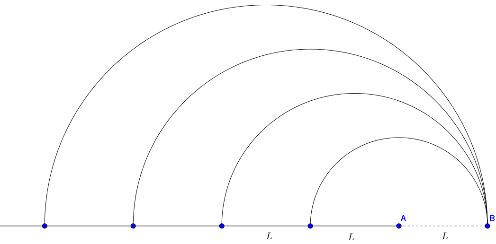
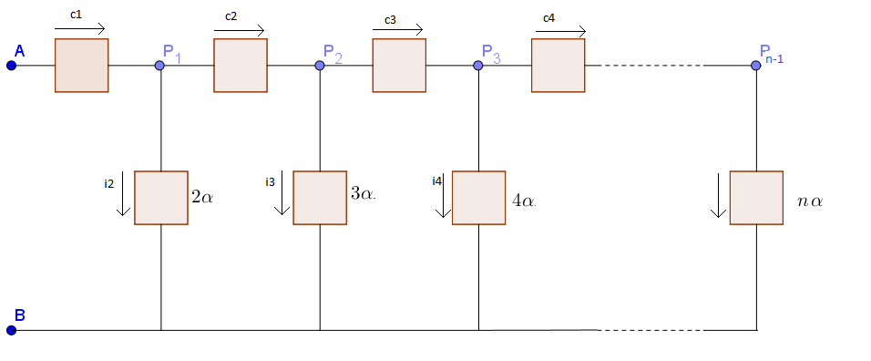

Pigkappa12 giu 2018, 20:47
Questo e' un problema che, in vari formati, ho proposto per Trieste negli ultimi anni. Non e' mai stato scelto per cui lo uso qua. Provo a postarlo prima come domanda unica, se i progressi sono troppo lenti poi posto la versione suddivisa in step intermedi.
La figura rappresenta un circuito in cui due punti A e B sono connessi tramite una serie di cavi. I cavi formano una griglia infinita di semicirconferenze. La distanza tra due punti contigui sulla retta in cui giacciono A e B e' sempre \(L = 1\) m. A e B non sono direttamente collegati se non tramite le semicirconferenze. Tutti i cavi sono fatti di rame, che ha resistivita' \(\rho = 1.68 \times 10^{-8}\) ohm m, e hanno sezione \(S = 0.1\) \(\text{cm}^2\).
Calcola la resistenza equivalente tra A e B. Puoi usare metodi numerici invece che fornire una risposta analitica, ma solo metodi che potresti applicare durante una prova delle Olifis con una calcolatrice scientifica.
-
Allegati
-

- grid.png (27.81 KiB) Visto 9358 volte
Pigkappa16 giu 2018, 9:15
A me viene un risultato un po' diverso, di circa il 20%... Puoi postare il procedimento?
Pigkappa16 giu 2018, 11:53
In un certo senso tu stai andando dall'esterno verso l'interno, mentre io sono andato dall'interno verso l'esterno. Se trovo il tempo in questi giorni cerco di capire quale approccio e' giusto. Intanto allego la mia soluzione in PDF. Nella soluzione ho usato una formula approssimata per la resistenza di tutte le circonferenze dopo la decima, ma ho provato in Mathematica ad andare oltre e il risultato mi veniva uguale.
-
Allegati
-
 Semicirconferenze e resistenza.pdf
Semicirconferenze e resistenza.pdf- (143.72 KiB) Scaricato 443 volte
Pigkappa17 giu 2018, 13:00
Ho rifatto i conti e sono giusti sia nel mio caso che nel tuo, per cui non e' un errore di conto. Non sono sicuro dove sia la magagna ma penso che il mio risultato sia giusto perche' coincide con quello che trovo facendo il conto con le correnti. Prova a pensare anche tu se c'e' qualcosa che non torna nel tuo metodo...
Consideriamo una griglia finita come in figura. Poniamo \(R = \rho L / S = 1\) per semplificare la notazione. Immaginiamo di aver messo una ddp tra A e B pari a 1 V. Chiamiamo le correnti sul lato superiore \(c_1, ... c_{n-1}\) e quelle sugli altri lati \(i_2, ... i_n\). Chiamiamo \(\alpha = \pi /2\). Le equazioni del circuito sono:
\(c_k = c_{k+1} + i_{k+1}\) per \(1 \le k \le n-2\)
\(c_k + i_{k+1} \times (k+1) \times \alpha = i_k \times k \times \alpha\) per \(2 \le k \le n-1\)
\(c_1 + i_2 \times 2 \times \alpha = 1\)
\(c_{n-1} = i_n\)
Questo e' un piacevole sistema lineare di 2n-2 equazioni e 2n-2 incognite. Sospetto ci siano modi di semplificarlo ma Mathematica lo puo' risolvere anche cosi'. La resistenza equivalente sara' \(1 / c_1\) e per grandi valori di \(n\) mi viene di nuovo uguale a \(\bar R = 2.52 R = 0.0042 \Omega\). Anche se la mia sintassi e' terribile, allego il notebook di Mathematica che ho usato per fare il conto, purtroppo come PDF perche' il forum non mi fa allegare il .nb.
-
Allegati
-
- grid_solution_3.pdf
- (61.02 KiB) Scaricato 398 volte
-

- grid_straight_currents.png (11.69 KiB) Visto 9207 volte
Pigkappa17 giu 2018, 23:42
Grazie drago :) Hai un link al teorema?
Se Flaffo riesce a riconciliarsi con il risultato o gli va bene fidarsi sono felice di passargli la staffetta, cosi' la staffetta continua, e magari possiamo farla tornare su problemi un po' piu' umani.
Sarei comunque curioso di trovare un risultato per la resistenza equivalente che si scriva come serie infinita o integrale piuttosto che richiedere una ricorsione, per cui provate a trovarla se ne avete voglia. Il mio supervisor di dottorato un paio di anni fa mi ha detto che secondo lui era "straightforward" farlo a partire dalle equazioni del circuito, ma io non ci sono riuscito.
Pigkappa30 lug 2018, 21:42
Fun fact scoperto somministrando questo problema a dei matematici: per \(\alpha = 1\) quella frazione (modulo semplici operazioni) e' un numero noto, la costante di Eulero-Gompertz.